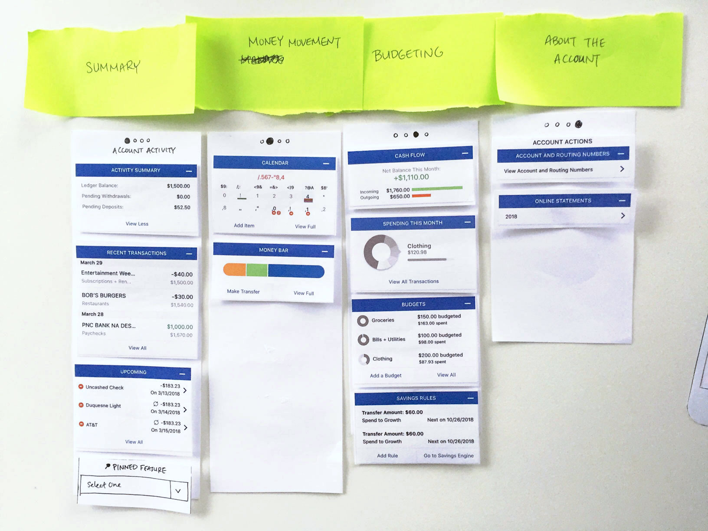
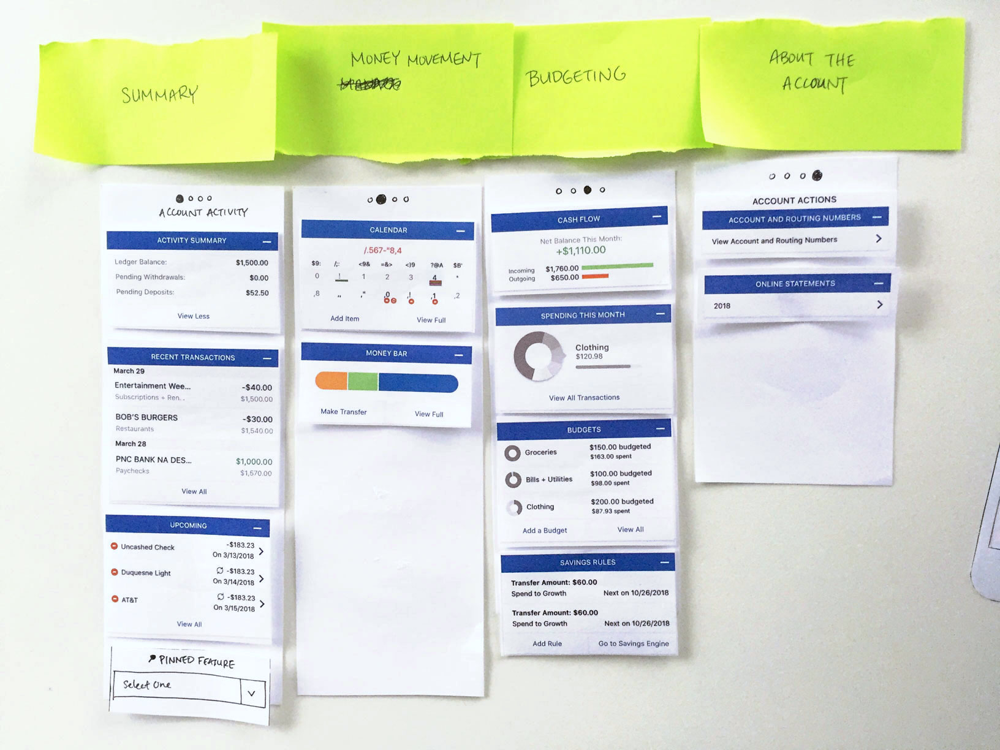
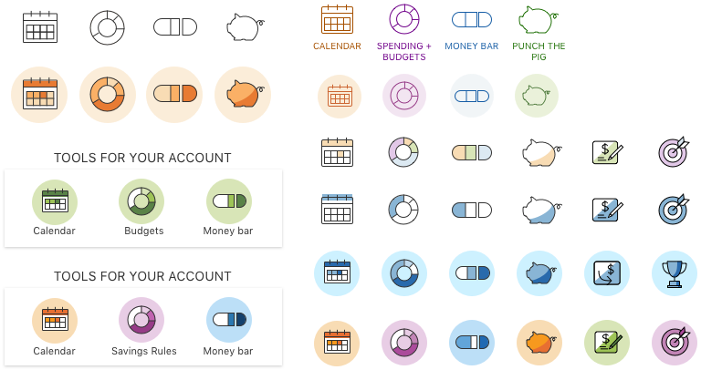
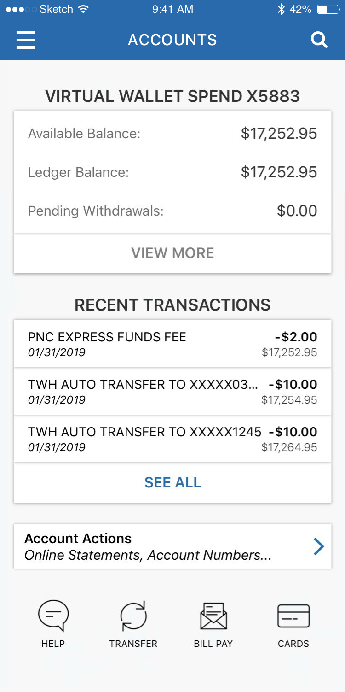
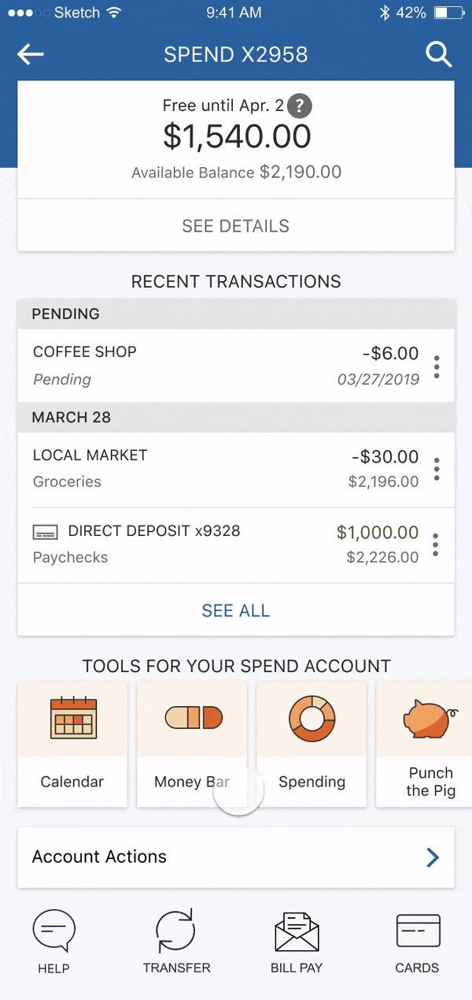
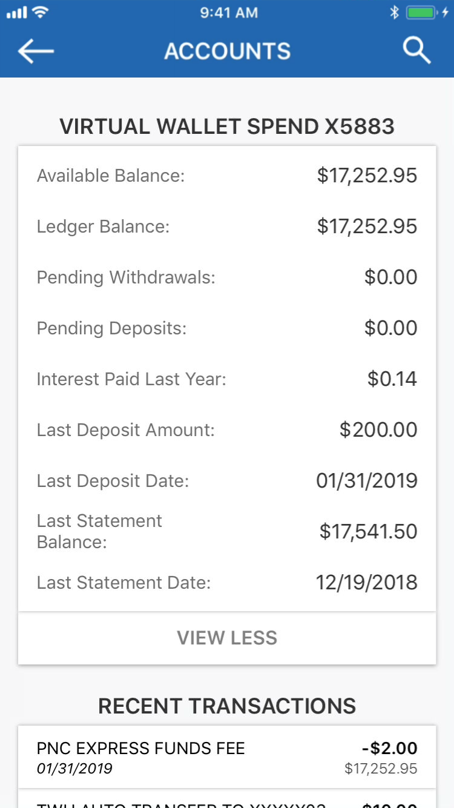
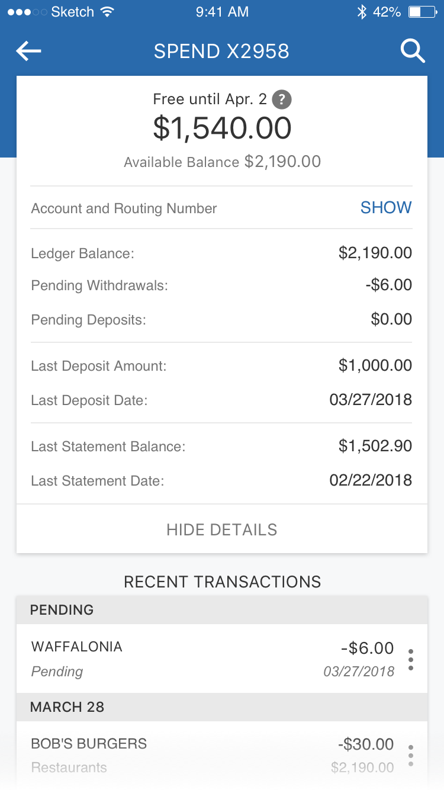
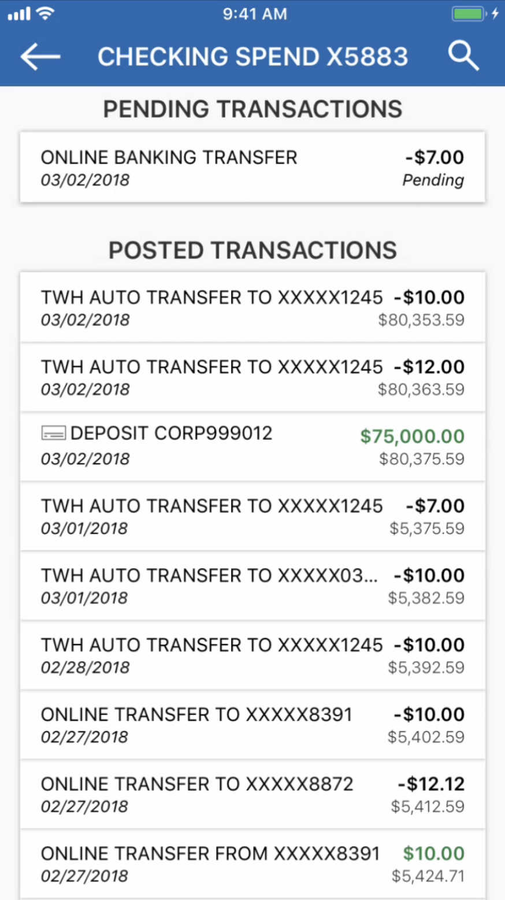
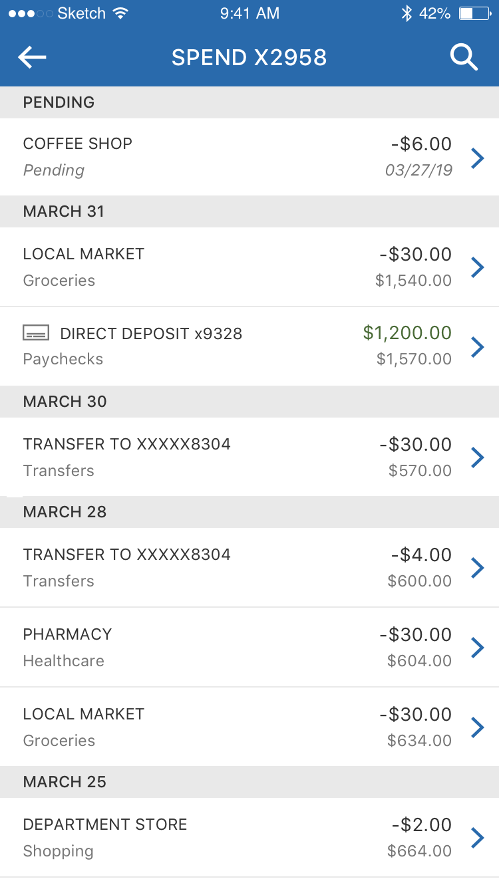
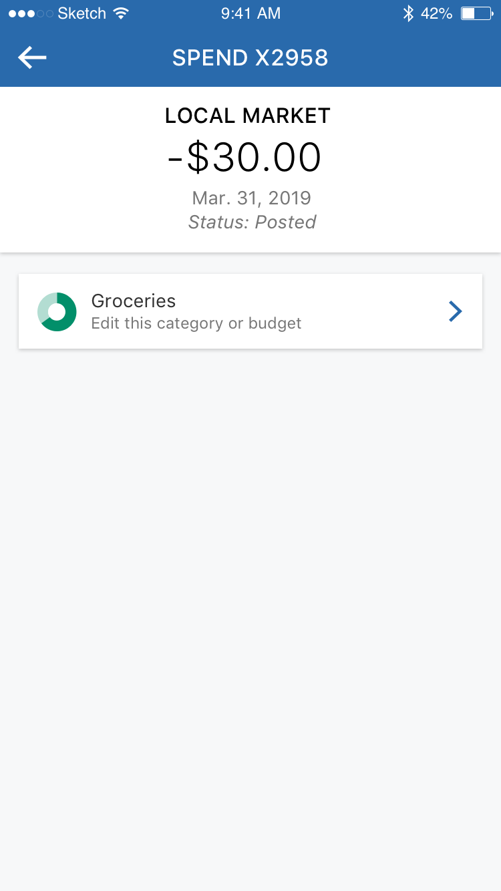

PNC: Account Activity
Challenge
Redesign the PNC app's account activity pages to incorporate Virtual Wallet features.
Outcome
Improved usability for all account pages, and added access to special banking tools for Virtual Wallet accounts.
My RolesResearch, UX, UI, product design
TeamProduct manager, Developer team
Overview
This project was part of an initiative to merge PNC's two banking apps into one. Previously, there was:
- 1) one for all PNC accounts (checking, savings, mortgage, etc.)
- 2) one for Virtual Wallet accounts only, including their suite of signature digital banking tools
After merging, all VW features would be available in the main PNC app for VW customers. The VW team's goal was to help transition existing VW customers into the main app, bringing in familiar VW branding and functionality.
My focus was redesigning the PNC app's Account Activity experience.
Research
Initial Interviews
I had 2 user groups: VW customers, and non-VW customers who would potentially be affected by new design changes.
I talked to both groups to learn how people generally use account activity. For VW users, I sought to learn how they bank with their digital tools, and I found that many didn't like having 2 apps for one bank—this supported the business ask.
If I could see all my PNC accounts in one place, and still have the tools, I’d use them all the time.
I asked 10 users perform one of 3 tasks to learn about the relationships between tools (how they’re used together), between tools and accounts (which tools might support checking vs. savings accounts), and between content in accounts in general.
 

Key findings
I realized that Account Activity is like a "dashboard" for account information and actions:
- Most often people visit account activity to check their finances, either before or after money moves.
- People are most concerned with their account balance and recent transactions.
- VW users associate certain banking tools with money in certain accounts.
Design
Development
With higher-fidelity mockups, I tried different ways of grouping content, displaying them and navigating between them.
Below are some ideas I explored and tested (with help from our research team, testing for task completion, ease of use and appeal).
Exploration: Carousel
Task completion: 66%; Ease: 4.9/7; Desirability: 6.1/7
Pros
- Organized by function/topic
Cons
- Can't compare cards in the same group
- Mixes action and static items
Exploration: Tabbed Pages
Task completion: 80%; Ease: 5.5/7; Desirability: 5.4/7
Pros
- Shorter pages, less scrolling
Cons
- Content hidden and less discoverable on other pages
- Difficult to assign page names
Exploration: Tool Bars
Task completion: 100%; Ease: 6.5/7; Desirability: 6.2/7
Pros
- Gives quick visual snapshot of financial activity
- Smaller widgets/icons are easier to process
Cons
- Less data presented at a time
Everything I need is on one page. I could easily manage the account without leaving this screen.
66% of users preferred the "tool bar" versions, across 15 A/B tests where users completed a set of tasks in one version and then were shown the other options.
Iconography
As I moved forward with the icon tool bar, I further developed the tool icons to make them more recognizable. Adding color (borrowed from VW's brand) were well received by stakeholders and users for adding visual delight in addition to brand familiarity.
Through metrics and qualitative feedback, I learned what worked well and continued to refine them. Some highlights include the enlarged account balance, the tool bar component, and the single page layout.
Final Screens
Using this iterative design cycle, I developed the final screens. I wanted the new designs to help people feel capable & delighted about money management, encouraging them to do more of it.
Below are the final pages for each type of VW account. Each account (checking, checking with interest, high-yield savings, and credit card) features a uniquely tailored tool set.

User Flow
This flow shows the key Account Activity user flow. Below, I provide more detail on how and why each screen was changed.
Account Page
- Clearer visual hierarchy
- Includes new "tool bar" component, icons and interaction
Old
New
Account Details
- Reduced clutter by hiding less-used information
- Lines added for visual grouping
Old
New
Transactions
- VW-exclusive “Category” detail
- Full width to increase real estate usage
Old
New
Transactions Details
- “Edit category” functionality
- Layout that allows for future detail items
Old
New
Results
- New visual page layout applied to account pages for 8.3 million users
- Tool bar design introduced for 4.8 million Virtual Wallet accounts
- Learning to work with the constraints of pre-existing product & patterns
- Improved ability to prototype with Sketch and InVision Studio
At the time I left it, the project was in an employee pilot release and the team was gathering feedback.
These tools save me a lot of time tracking money, and I use the app a lot more now.